require(sf)
require(tidyverse)8 Static Maps
Along with all the geographical data making its way into the public domain, a variety of tools to map that data have also been developed. For a long time R base provides tools to map geographical data—data with latitude and longitude coordinates attached to it. However, mapping in the early days of R was not easy, it was not elegant either. Recently, several packages have been developed for mapping geographical data that align with the ggplot framework. So they allow us to map spatial data in similar ways as other plots with a grammar of graphic principle. For example Edzer Pebesma (2018) developed an awesome sf package for mapping vector data in R. The power of this function lies in the fact that it structure the spatial data in tidy format, allowing for easy manipulation with the tidyverse function and also for plotting with the ggplot2 flavor. The sf package allows you to read in and work with geographical data in a tidy format.
8.1 Geographical data in a tidy format
The sf package allows you to create a simple feature—a data frame with additional columns that hold spatial component called the geometry. This column contains the geometrical nature of the data needed to draw the data. Often the sf object has two classes—the simple feature and the data.frame classes. The data.frame holds attribute information of the dataset and the geometry contains the geographical coordinates. For example, the simple feature displayed below is a dataset of sampling stations, where each row gives the data for each station. The data.frame here holds the first four columns— the id, type, depth and sst, whereas the geometry column include the geometry type, for this case the point and the embedded latitude and longitude geographical coordinates. There different ways to create simple feature in R using the sf package. We will create a few of them later that we will use for mapping examples.
We need to load the packages we are going to use in this chapter.
FALSE Simple feature collection with 11 features and 4 fields
FALSE Geometry type: POINT
FALSE Dimension: XY
FALSE Bounding box: xmin: 39.50958 ymin: -8.425115 xmax: 42.00623 ymax: -6.414011
FALSE Geodetic CRS: WGS 84
FALSE First 10 features:
FALSE id type depth sst geometry
FALSE 1 294 marker 29 27.87999 POINT (39.50958 -6.438159)
FALSE 2 300 marker -604 27.97999 POINT (39.6318 -6.621774)
FALSE 3 306 marker -569 27.97999 POINT (39.65447 -6.746649)
FALSE 4 312 marker -485 28.03999 POINT (39.62563 -6.805321)
FALSE 5 318 marker -325 28.03999 POINT (39.58374 -6.833973)
FALSE 6 326 marker -461 28.03999 POINT (39.66476 -6.837384)
FALSE 7 414 marker -505 28.02999 POINT (39.95728 -7.843535)
FALSE 8 428 marker -132 28.23999 POINT (39.67712 -8.136846)
FALSE 9 434 marker -976 28.16999 POINT (39.74853 -8.425115)
FALSE 10 456 marker -3311 28.33999 POINT (42.00623 -7.025368)8.1.1 Create simple feature from data.frame
If you have a regular dataframe, you can convert it into a simple feature object with tools in the sf package. For instance, in the working directory we have a dataset of eleven stations named points.csv. We can simply import this dataset into R session with the read_csv() function. If we print the file, it give about the variables and rows presented in the datasete. There six variables—id, type, depth and sst along with the latitude and longitude coordinates. These stations contains measured variable of sea surface temperature and their maximum depth.
stations = read_csv("assets/shp//points.csv")
stations# A tibble: 11 x 6
lon lat id type depth sst
<dbl> <dbl> <dbl> <chr> <dbl> <dbl>
1 39.5 -6.44 294 marker 29 27.9
2 39.6 -6.62 300 marker -604 28.0
3 39.7 -6.75 306 marker -569 28.0
4 39.6 -6.81 312 marker -485 28.0
5 39.6 -6.83 318 marker -325 28.0
6 39.7 -6.84 326 marker -461 28.0
7 40.0 -7.84 414 marker -505 28.0
8 39.7 -8.14 428 marker -132 28.2
9 39.7 -8.43 434 marker -976 28.2
10 42.0 -7.03 456 marker -3311 28.3
11 41.8 -6.41 462 marker -3248 28.6Athough this dataset contains geographical coordinates in it (latitude and longitude), it’s just a regular data frame. We can use the geographical coordinates in the dataframe to convert it to simple feature with the st_as_sf() function, and specify the columns with the geographical information using the coords parameter.
simple_feature = stations %>%
sf::st_as_sf(coords = c("lon", "lat"))Once we have the simple feature object, we can set the geographica coordinate system to World Geodetic System of 1984 (WGS84). I prefer using its code, which is easy to punch in instead of the whole text. If we print out the simple feature we just created, it gives the extra information at the top of the print-out, which include the number of features and columls(fields), the geometry type as point, the geographical extent (the bounding box) of and the projection both in epsg code and string.
simple_feature = simple_feature %>%
sf::st_set_crs(4326)ggplot()+
geom_sf(data = simple_feature, aes(col = sst, size = wior::inverse_hyperbolic((sst))))+
scale_colour_gradientn(colors = oce::oce.colors9A(120))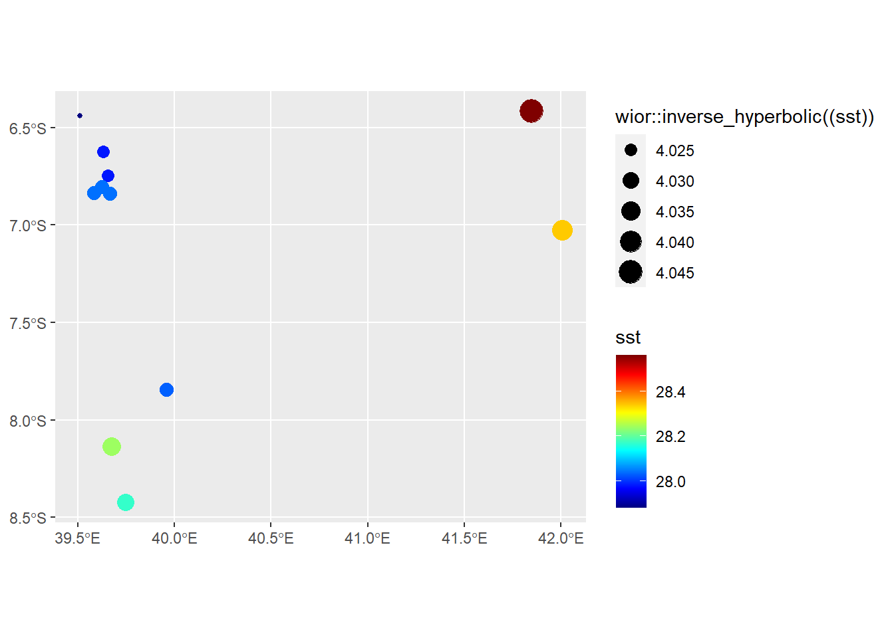
8.1.2 Importing shapefile
When you create maps, you will often want to import shapefile—a widely used format for storing geographical data in GIS. sf package offers tools to read and load shapefiles into R. Let’s import africa’s country boundary shapefile from the working directory. We use the st_read() function from sf package to read the shapefile boundary layer. Like the simple features we created, the shapefile also display extra information at the top confirming that it’s no longer a shapefile but rather a simple feature.
## read
africa = sf::st_read("assets/shp/africa.shp", quiet = TRUE)
africaSimple feature collection with 59 features and 7 fields
Geometry type: MULTIPOLYGON
Dimension: XY
Bounding box: xmin: -25.35875 ymin: -34.83983 xmax: 57.80085 ymax: 37.34962
Geodetic CRS: WGS 84
First 10 features:
COUNT CNTRY_NAME FIPS_CNTRY LAND_AREA_ REGIONA EMPTY EMPTY2
1 34 Angola AO 124670 <NA> 0 0
2 114 Burundi BY 2783 <NA> 0 0
3 77 Benin BN 11262 <NA> 0 0
4 301 Burkina Faso UV 27400 <NA> 0 0
5 25 Botswana BC 58173 <NA> 0 0
6 51 Central African Republic CT 62298 <NA> 0 0
7 51 Cameroon CM 47544 <NA> 0 0
8 186 Ivory Coast IV 32246 <NA> 0 0
9 46 Congo CF 34200 <NA> 0 0
10 15 Cape Verde CV 403 <NA> 0 0
geometry
1 MULTIPOLYGON (((12.84118 -6...
2 MULTIPOLYGON (((29.05021 -2...
3 MULTIPOLYGON (((3.849006 10...
4 MULTIPOLYGON (((-5.272945 1...
5 MULTIPOLYGON (((23.14635 -1...
6 MULTIPOLYGON (((22.03557 4....
7 MULTIPOLYGON (((9.640797 3....
8 MULTIPOLYGON (((-6.091862 4...
9 MULTIPOLYGON (((16.45276 2....
10 MULTIPOLYGON (((-24.64849 1...Since the layer is for the whole Africa, to reduce the processing time, we must reduce the geographical extent to the area of interest. We use the st_crop() function to chop the area that we want to map and discard the rest.
kimbiji = africa %>%
sf::st_crop(xmin = 38.0,
xmax = 40.5,
ymin = -8,
ymax = -5.5)8.1.3 Reading other format
Sometimes you have geographical data that are neither in tabular form or shapefile. In that situation, you ought to use the st_layers() function to identify, first the driver used to create the file and, second, the layer name you want to extract. Once you have identified the layer of interest, you can use the st_read() function to import the layer from the file. For example, we have the track file that was recorded with a GPS device. Let’s explore the layer it contains with the `st_layers() function.
tracks = sf::st_layers("assets//tracks/Track-181204-075451.gpx")
tracksDriver: GPX
Available layers:
layer_name geometry_type features fields
1 waypoints Point 1 19
2 routes Line String 0 12
3 tracks Multi Line String 1 12
4 route_points Point 0 21
5 track_points Point 1467 24Once we print, it shows that i’s a GPX format with five layer’s name. We are only interested with the tracks and track_points layers. We can extract them with the st_read() function, by specifying the dsn and the layer. This can be written as;
## obtain track points
track.points = sf::st_read(dsn ="assets//tracks/Track-181204-075451.gpx" ,layer = "track_points", quiet = TRUE)
## drop other variable that are not needed
track.points = track.points %>% select(elevation = ele, time, speed)
## display
track.pointsSimple feature collection with 1467 features and 3 fields
Geometry type: POINT
Dimension: XY
Bounding box: xmin: 39.68927 ymin: -8.033337 xmax: 39.75059 ymax: -7.977127
Geodetic CRS: WGS 84
First 10 features:
elevation time speed geometry
1 -3.7 2018-12-04 07:54:55 1.471591 POINT (39.75051 -7.977127)
2 -5.0 2018-12-04 07:54:58 1.479312 POINT (39.75052 -7.977157)
3 -5.6 2018-12-04 07:55:00 1.358867 POINT (39.75052 -7.977185)
4 -5.8 2018-12-04 07:55:02 1.530269 POINT (39.75052 -7.977215)
5 -5.9 2018-12-04 07:55:04 1.424751 POINT (39.75052 -7.977243)
6 -6.1 2018-12-04 07:55:05 1.381000 POINT (39.75052 -7.977262)
7 -6.2 2018-12-04 07:55:07 1.437619 POINT (39.75052 -7.97729)
8 -6.3 2018-12-04 07:55:09 0.994958 POINT (39.75051 -7.97731)
9 -6.3 2018-12-04 07:55:11 1.032018 POINT (39.75051 -7.97733)
10 -6.4 2018-12-04 07:55:13 1.369676 POINT (39.7505 -7.977353)track = sf::st_read(dsn ="assets//tracks/Track-181204-075451.gpx" ,layer = "tracks", quiet = TRUE)
trackSimple feature collection with 1 feature and 12 fields
Geometry type: MULTILINESTRING
Dimension: XY
Bounding box: xmin: 39.68927 ymin: -8.033337 xmax: 39.75059 ymax: -7.977127
Geodetic CRS: WGS 84
name cmt
1 Tracking android:60fd0ef637a6eb1b <NA>
desc src link1_href link1_text link1_type
1 Tracking recently started 12/4/18 07:54 <NA> <NA> <NA> <NA>
link2_href link2_text link2_type number type geometry
1 <NA> <NA> <NA> 10193 <NA> MULTILINESTRING ((39.75051 ...8.2 Introduction
A satisfying and important aspect of geographic research is communicating the results in spatial context. With recent advance in technology from satellite, internet and mobile location services, the amount of geographical data has increased significantly. Plenty of data are generated daily with latitude and longitude coordinates attached to it both from satellite observation and social media. To be able to build up a good mental model of the spatial data, you need to invest considerable effort in making your maps as self-explanatory as possible. In this chapter, you’ll learn some of the tools that ggplot2 provides to make elegant maps and graphics (Wickham 2016).
Maps are great way to understand patterns from data over space. They are scaled down versions of the physical world, and they’re everywhere. R has several systems for making graphs, but ggplot2 is one of the most elegant and most versatile. ggplot2 implements the grammar of graphics, a coherent system for describing and building graphs. The chapter also introduce you to some extended functionalities from sf (Pebesma 2018), cowplot (Wilke 2018), ggsn (ggsn?), ggsci (ggsci?), metR (Campitelli 2019), ggrepel (ggrepel?), gganimate (Pedersen and Robinson 2017) and egg (Auguie 2018) packages. Therefore, this chapter focuses on the tools you need to create good graphics. Rather than loading those extensions here, we’ll refer to their functions explicitly, using the :: notation. This will help make it clear which functions are built into ggplot2, and which come from other packages. Ensure you have these packages in your machine, otherwise install them with install.packages() if you don’t already have them.
8.3 Static Maps
Static maps are the most common type of visual output from spatial objects. Fixed images for printed outputs, common formats for static maps include .png and .pdf, for raster and vector outputs, respectively. Initially static maps were the only type of map that R could produce. Things have advanced greatly since sp was released (see (sp?)). Many new techniques for map making have been developed since then. However, a decade later static plotting was still the emphasis of geographic data visualisation in R (Cheshire and Lovelace 2015).
Despite the innovation of interactive mapping in R, static maps are still the foundation of mapping in R. The base plot() function is often the fastest way to create static maps from vector and raster spatial objects. Sometimes simplicity and speed are priorities, especially during the development phase of a project, and this is where plot() excels. The base R approach is also extensible, with plot() offering dozens of arguments. Another low-level approach is the grid package, which provides functions for low-level control of graphical outputs. This section, however, focus on how to make static maps with ggplot2, emphasizing the important aesthetic and layout options.
8.3.1 The bathmetry data
ggplot2 works with data that are tidy—data frame arranged in such way that observations are in rows and variables are in columns and each value must have its own cell. But, the bathmetry data is from ETOPO1 and came in .asc format. First read the file with the raster::raster() function.
## read the ascii file
tz.bath = raster::raster("assets/raster/wioregio-7753.asc")
tz.bath %>% class()[1] "RasterLayer"
attr(,"package")
[1] "raster"We notice that the file is raster and ggplot2 requires data.frame. To continue, we need to convert the data and tidy in format that is **plot2–readable. Specifically, we need to convert raster file into data frame with raster::as.data.frame(xy = TRUE) and specify the xy = TRUE argument. We then rename the x to lon, y to lat and convert bathmetry values from the double presion to integer and select values within the geographical extend of interest and depth between 0 and 1200 meter deep.
## convert raster to data frame
tz.bath.df = tz.bath %>%
raster::as.data.frame(xy = TRUE) %>%
dplyr::as_tibble()
## rename the variable
tz.bath.df = tz.bath.df %>%
dplyr::rename(lon = x, lat = y, depth = 3)%>%
dplyr::mutate(depth = as.integer(depth))
## chop the area of interest
off.kimbiji = tz.bath.df %>%
dplyr::filter(lon > 38.5 & lon < 40 &
lat > -7.2 & lat < - 6 &
depth > -1200& depth < 0 )The bathmetry file now contain three variables, the lon, lat and depth as seen in table @ref(tab:tab91)
off.kimbiji %>%
dplyr::sample_n(10) %>%
knitr::kable(col.names = c("Longitude", "Latitude", "Depth (meters)"), digits = 3,
caption = "Ten randomly selected points of bathmetry values off Kimbiji, Tanzania", align = "c")%>%
kableExtra::column_spec(column = 2:3, width = "3cm")%>%
kableExtra::add_header_above(c("Coordinate (Degree)" = 2,""))| Longitude | Latitude | Depth (meters) |
|---|---|---|
| 39.067 | -6.033 | -6 |
| 39.850 | -6.683 | -548 |
| 39.517 | -6.600 | -407 |
| 39.967 | -6.833 | -149 |
| 39.500 | -6.867 | -25 |
| 39.717 | -6.267 | -669 |
| 39.567 | -7.050 | -46 |
| 39.300 | -6.750 | -15 |
| 39.017 | -6.400 | -1 |
| 39.700 | -6.700 | -616 |
8.4 Basemap
We also need basemap—country boundary layer. We use the st_read() function from sf package to read the shapefile boundary layer. Since the layer is for the whole Africa, to reduce the processing time for ploting the map of africa, we use the st_crop() function to chop the area of interest.
kimbiji = africa %>% sf::st_crop(xmin = 38.0, xmax = 40.5, ymin = -8, ymax = -5.5)8.5 Creating contour map
Once we have the data ready, we can tools in ggplot2 and add-on packages to create the bathmetry map off–Kimbiji located between longitude 38.5°E and 40.1°E and latitude 7.2°S and `r metR::LatLabel(-6.0). The code block below was used to create (fig901?).
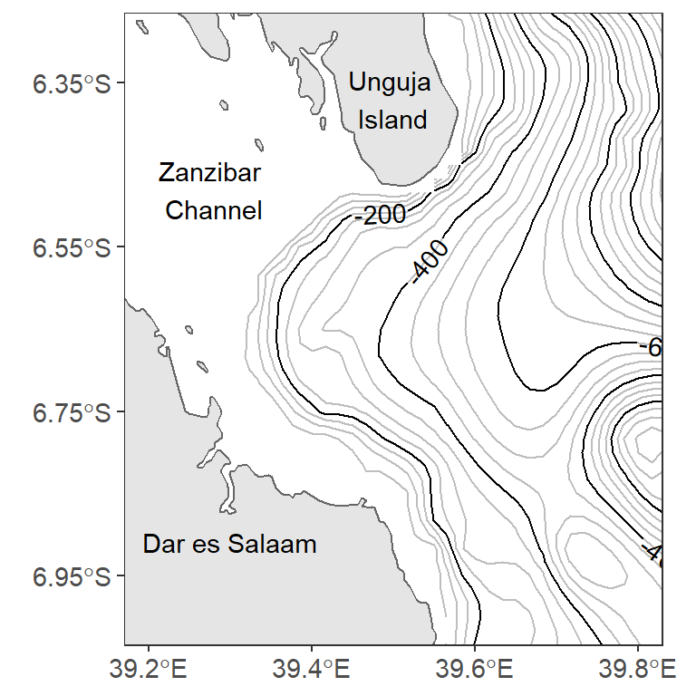
There are fourteen lined of codes in the chunk to make figure @ref(fig:fig901). That’s a lot! Don’t get intimidated, I will explain in detail how each line of code work together to make this figure. As before, you start plotting ggplot2 with the ggplot() function as the first line. Surprisingly, the ggplot() is empty without any argument specified. When mapping with geom_sf() function in ggplot2 package, you are advised to leave the ggplot() function empty. This will allow the geom_sf() to label the axes with the appropriate geographical labelling for longitude and latitude. The second line of gode add a simple feature with a geom_sf() function from sf package. Note however, I specified the geom_sf() to fill the boundary layer with grey of 90 shade and the stroke with black colour.
map = ggplot()+
geom_sf(data = kimbiji, fill = "grey90", col = "grey40")
map 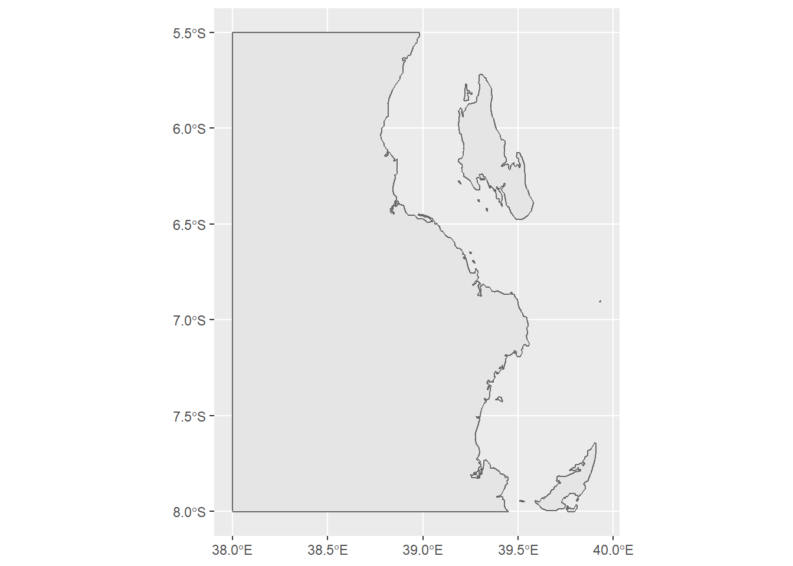
note that ggplot2 plot the map with default aesthetic settings. The plot background is filled with gray color and without stroke but the grids are white colored. The third line add the contour lines spaced at 50 meter intervals. Instead of using geom_contour() from ggplot2, the geom_contour2() from metR package was used. They both serve the same task.
map = map +
geom_sf(data = kimbiji, fill = "grey90", col = "grey40")+
metR::geom_contour2(data = off.kimbiji,
aes(x = lon, y = lat, z=depth), binwidth = 50, col = "grey")
map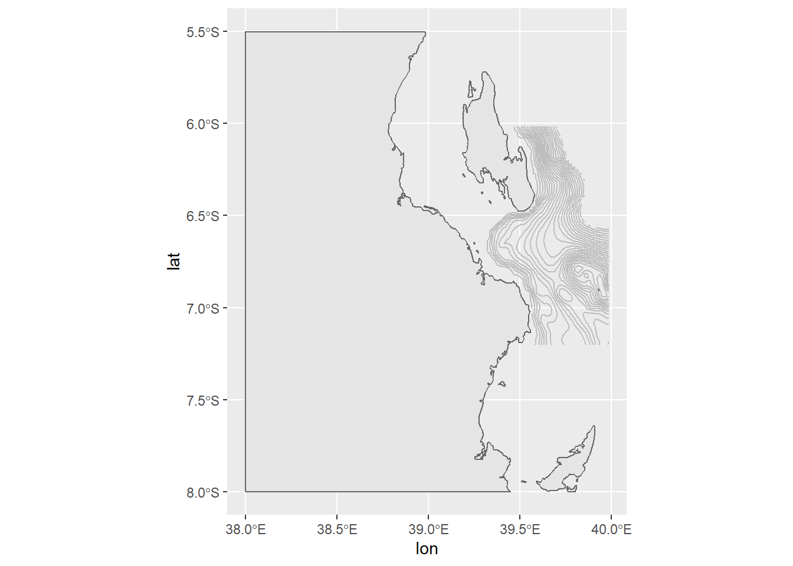
Like the third line, the fourth line add contour lines, but instead of spacing them into meters, these are spaced at 200 meters interval and are black in color.
map = map +
metR::geom_contour2(data = off.kimbiji,
aes(x = lon, y = lat, z=depth), binwidth = 200)
map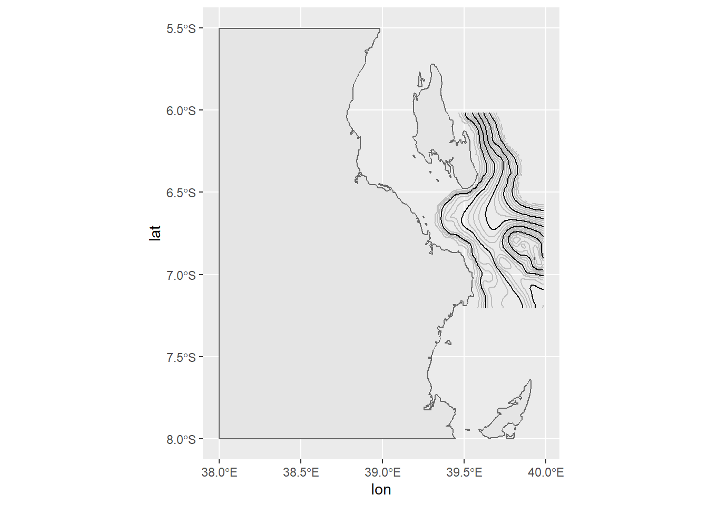
The fifth line add the label on contour spaced at 200 meter interval with geom_text_contour() function from metR package. Here is where you will find the useful of package like metR that extends the ggplot2, for which the current version (2.3.1.1) is unable.
map = map +
metR::geom_contour2(data = off.kimbiji,
aes(x = lon, y = lat, z=depth, label = ..level..), binwidth = 200, skip = 0)
map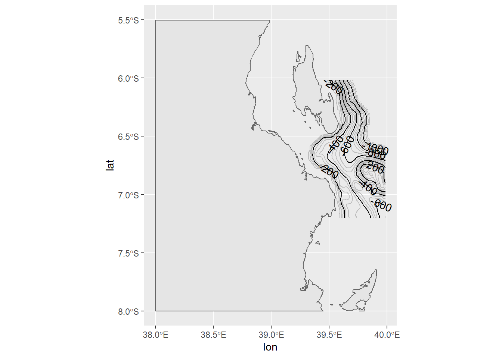
The sixth line zoom the map to only the geographical extent we are interested with using the coord_sf() function from sf package. We could also use the coord_cartesin() to limit the area.
map = map +
coord_sf(xlim = c(39.2, 39.8), ylim = c(-7, -6.3))
map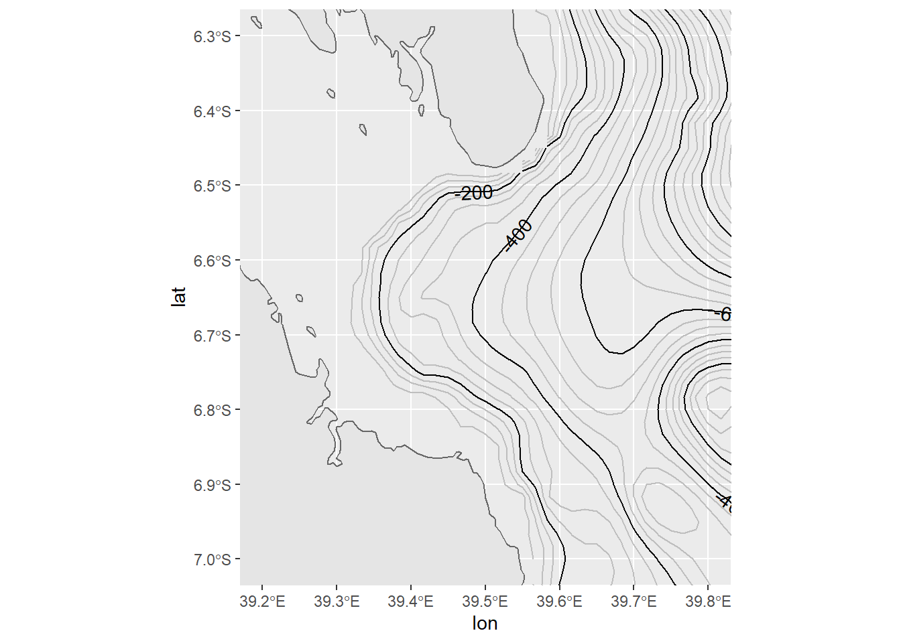
We got a glimpse of the map now, let us use theme to make some changes. The background was set to white with panel.background = element_rect(fill = "white"), and removed grids with panel.grid = element_line(colour = NA) and change the font size of the axis label to 11 points with axis.text = element_text(size = 11). The theme_bw() just set the border of the plot to black with solid line.
map = map +
theme_bw()+
theme(panel.background = element_rect(fill = "white"),
panel.grid = element_line(colour = NA),
axis.text = element_text(size = 11))
map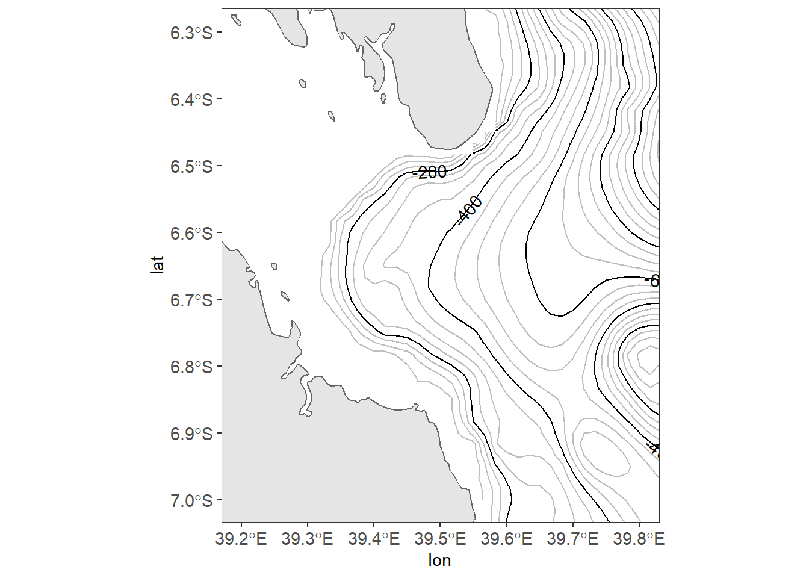
The good thing to start making maps is with an understanding of the map elements. A static map can be composed of many different map elements. These include main map body, legend, title, scale indicator, orientation indicator, inset map and source or ancillary information. By increasing the font size of axis textual label to 11, the axes are cluttered. adding the scale can improve the labelling. scale_x_continuous(breaks = seq(39.2, 39.8, .2)) in line 9 force ggplot2 to label the x–axis four letter that are spaced with 0.2 latitude and scale_y_continuous(breaks = seq(-6.95, -6.35, length.out = 4)) in line 10 label four digits of longitude.
map = map+
scale_x_continuous(breaks = seq(39.2, 39.8, .2))+
scale_y_continuous(breaks = seq(-6.95, -6.35, length.out = 4))
map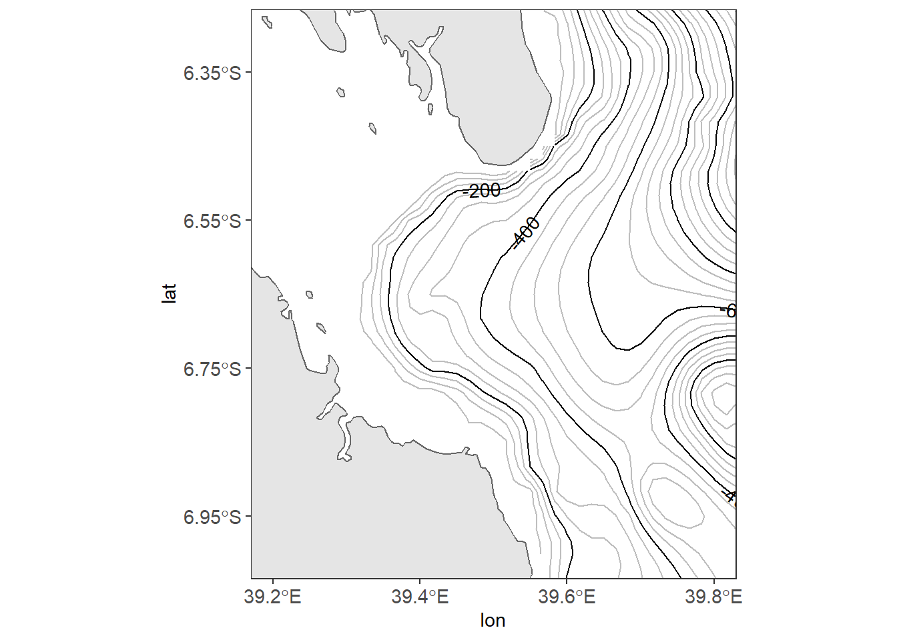
Because the axes are abbreviated with longitude and latitude symbol, line 11 in the code remove the axes title label. Line 12 to 14 add textual label on the map with the annotate() function.
map = map +
theme(axis.title = element_blank())+
annotate(geom = "text", x = 39.28, y = -6.48, label = "Zanzibar \nChannel")+
annotate(geom = "text", x = 39.5, y = -6.37, label = "Unguja \nIsland")+
annotate(geom = "text", x = 39.3, y = -6.91, label = "Dar es Salaam")
map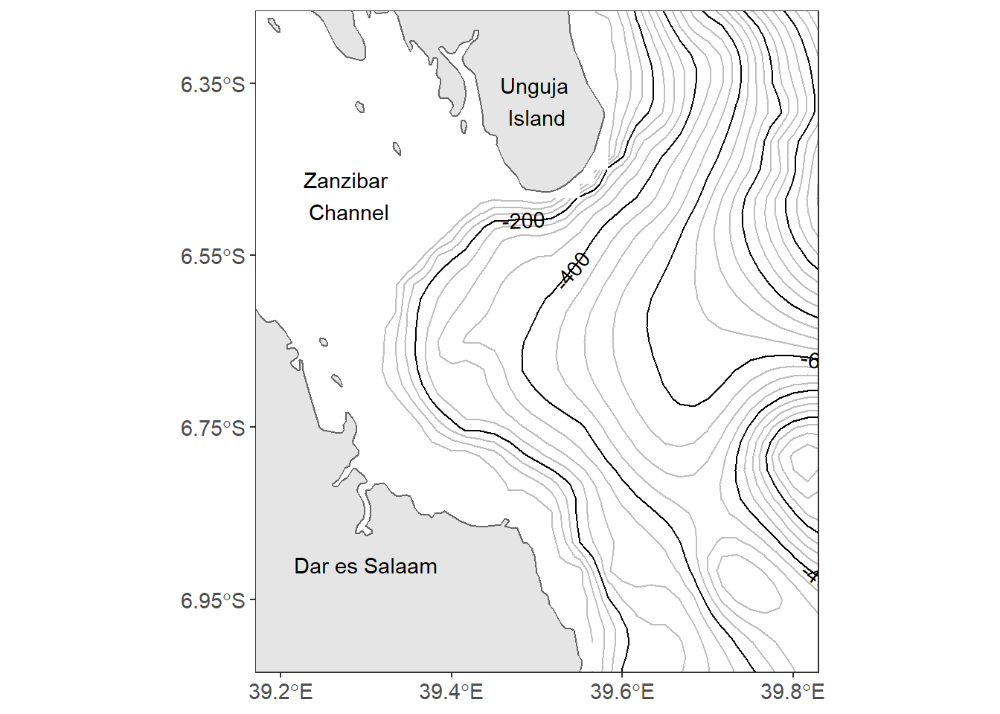
Close look of figure @ref(fig:fig901), the north arrrow and the scale bar are missing. The last two lines of our code inset the scalebar and north arrow on map using the annotation_scale() and ggspatial::annotation_north_arrow() functions from ggspatial package.
In a nutshell, making this map using ggplot2 and ancillary extensions used fiften line codes and hundred of arguments. This are very common task of making maps with the combination of tools from different packages.
map +
ggspatial::annotation_scale(height = unit(.35, "cm"), pad_x = unit(.5, "cm"),
tick_height = unit(3, "cm"), pad_y = unit(.5, "cm"), text_cex = .85)+
ggspatial::annotation_north_arrow(location = "tr", width = unit(.75, "cm"), height = unit(1, "cm"))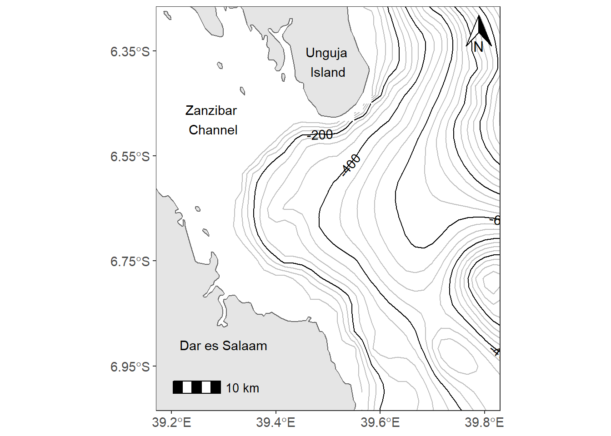
metR package has geom_contour_fill() function that draw filled contour lines and geom_contour_tanaka(), which illunate contours with varying brithtness to create an illusion of relief. The code chunk to create highlighted filled contour using metR function can be written as;
ggplot()+
metR::geom_contour_fill(data = off.kimbiji,
aes(x = lon, y = lat, z=depth), na.fill = TRUE, show.legend = FALSE)+
metR::geom_contour_tanaka(data = off.kimbiji,
aes(x = lon, y = lat, z=depth))+
metR::geom_text_contour(data = off.kimbiji, aes(x = lon, y = lat, z=depth),
rotate = TRUE, check_overlap = TRUE, size = 3.0)+
geom_sf(data = kimbiji, fill = "grey90", col = "grey40")+
coord_sf(xlim = c(39.2, 39.8), ylim = c(-7, -6.3))+
theme_bw()+
theme(panel.background = element_rect(fill = "white"),
panel.grid = element_line(colour = NA),
axis.text = element_text(size = 11))+
scale_x_continuous(breaks = seq(39.2, 39.8, .2))+
scale_y_continuous(breaks = seq(-6.95, -6.35, length.out = 4))+
scale_fill_gradientn(colours = oce::oce.colorsGebco(120))+
labs(x = NULL, y = NULL)+
annotate(geom = "text", x = 39.28, y = -6.48, label = "Zanzibar \nChannel")+
annotate(geom = "text", x = 39.5, y = -6.37, label = "Unguja \nIsland")+
annotate(geom = "text", x = 39.3, y = -6.91, label = "Dar es Salaam")+
ggspatial::annotation_scale(height = unit(.35, "cm"), pad_x = unit(.5, "cm"),
tick_height = unit(3, "cm"), pad_y = unit(.5, "cm"), text_cex = .85)+
ggspatial::annotation_north_arrow(location = "tr", width = unit(.75, "cm"), height = unit(1, "cm"))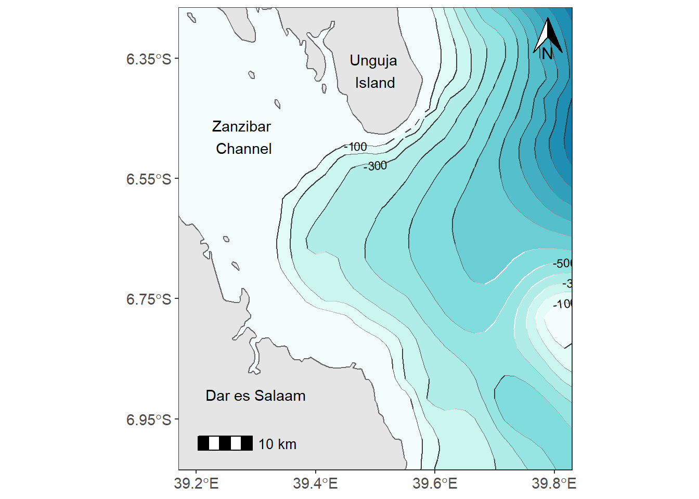
8.6 Inset maps
An inset map is a smaller map rendered within or next to the main map. It could serve many different purposes, including showing the relative position of the study area in regional area. In figure @ref(fig:fig9011) is the map showing the contour interval off-kimbiji, Tanzania. The inset map show the area of Kimbiji in the Western Indian Ocean Region. The chunk below was used to create figure @ref(fig:fig911). In a nutshell, we assign the study area map as main.map and the regional map as inset.map and then we used function from the cowplot package to combine the two maps.
main.map = ggplot()+
geom_sf(data = kimbiji, fill = "grey90", col = "grey40")+
metR::geom_contour2(data = off.kimbiji,
aes(x = lon, y = lat, z=depth), binwidth = 50, col = "grey")+
metR::geom_contour2(data = off.kimbiji,
aes(x = lon, y = lat, z=depth), binwidth = 200)+
metR::geom_text_contour(data = off.kimbiji,
aes(x = lon, y = lat, z=depth),
binwidth = 200, rotate = FALSE)+
coord_sf(xlim = c(39.2, 39.8), ylim = c(-7, -6.3))+
theme_bw()+
theme(panel.background = element_rect(fill = "white"),
panel.grid = element_line(colour = NA),
axis.text = element_text(size = 11))+
scale_x_continuous(breaks = seq(39.2, 39.8, .2))+
scale_y_continuous(breaks = seq(-6.95, -6.35, length.out = 4))+
labs(x = NULL, y = NULL)+
annotate(geom = "text", x = 39.28, y = -6.48, label = "Zanzibar \nChannel")+
annotate(geom = "text", x = 39.5, y = -6.37, label = "Unguja \nIsland")+
annotate(geom = "text", x = 39.3, y = -6.91, label = "Dar es Salaam")+
ggspatial::annotation_scale(location = "bl")+
ggspatial::annotation_north_arrow(location = "tr")
world = spData::world
aoi = data.frame(lon = c(38.5, 40, 40, 38.5, 38.5),
lat = c(-8, -8, -6, -6, -8))
inset.map = ggplot()+
geom_sf(data = world, fill = "grey90", col = 1)+
coord_sf(xlim = c(37, 45), ylim = c(-12,-1))+
geom_path(data = aoi, aes(x = lon, y = lat), size = 1.2)+
theme_bw()+
theme(plot.background = element_blank(),
axis.text = element_blank(),
axis.ticks = element_blank(), panel.grid = element_line(colour = "white")) +
labs(x = NULL, y = NULL)
cowplot::ggdraw()+
cowplot::draw_plot(plot = main.map, x = 0, y = 0, width = 1, height = 1, scale = 1)+
cowplot::draw_plot(plot = inset.map, x = .558, y = .05, width = .3,height = .3)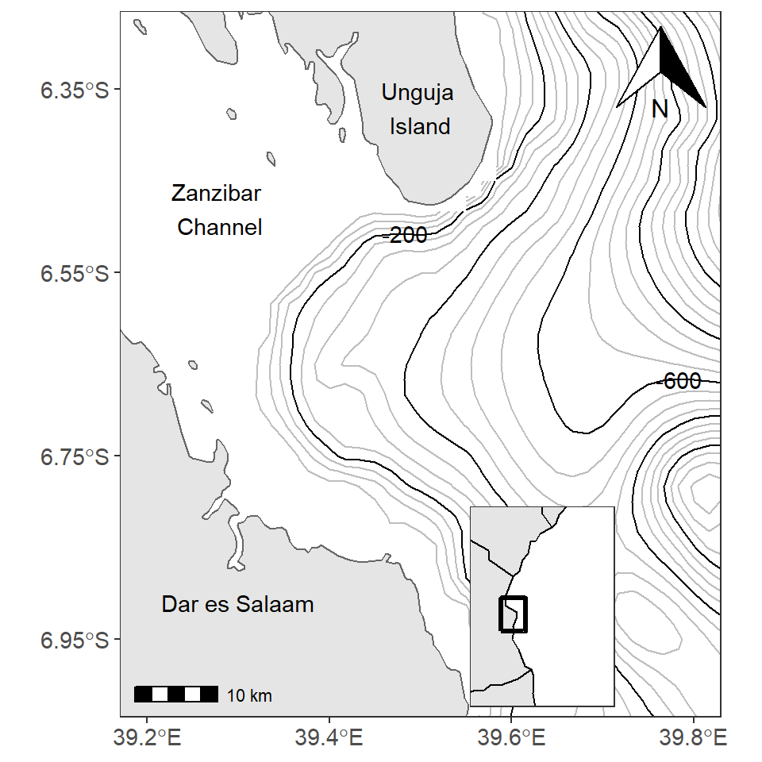
main.map = ggplot()+
metR::geom_contour_fill(data = off.kimbiji,
aes(x = lon, y = lat, z=depth), na.fill = TRUE, show.legend = FALSE)+
metR::geom_contour_tanaka(data = off.kimbiji,
aes(x = lon, y = lat, z=depth))+
metR::geom_text_contour(data = off.kimbiji,
aes(x = lon, y = lat, z=depth), rotate = TRUE, check_overlap = TRUE, size = 3.4)+
geom_sf(data = kimbiji, fill = "grey90", col = "grey40")+
coord_sf(xlim = c(39.2, 39.8), ylim = c(-7, -6.3))+
theme_bw()+
theme(panel.background = element_rect(fill = "white"),
panel.grid = element_line(colour = NA),
axis.text = element_text(size = 11))+
scale_x_continuous(breaks = seq(39.2, 39.8, .2))+
scale_y_continuous(breaks = seq(-6.95, -6.35, length.out = 4))+
scale_fill_gradientn(colours = oce::oce.colorsGebco(120))+
labs(x = NULL, y = NULL)+
annotate(geom = "text", x = 39.28, y = -6.48, label = "Zanzibar \nChannel")+
annotate(geom = "text", x = 39.5, y = -6.37, label = "Unguja \nIsland")+
annotate(geom = "text", x = 39.3, y = -6.91, label = "Dar es Salaam")+
ggspatial::annotation_scale(location = "bl")+
ggspatial::annotation_north_arrow(location = "tr", width = unit(.75, "cm"))
world = spData::world
aoi = data.frame(lon = c(38.5, 40, 40, 38.5, 38.5),
lat = c(-8, -8, -6, -6, -8))
inset.map = ggplot()+
geom_sf(data = world, fill = "grey90", col = 1)+
coord_sf(xlim = c(37, 45), ylim = c(-12,-1))+
geom_path(data = aoi, aes(x = lon, y = lat), size = 1.2)+
theme_bw()+
theme(plot.background = element_blank(),
axis.text = element_blank(),
axis.ticks = element_blank(), panel.grid = element_line(colour = "white")) +
labs(x = NULL, y = NULL)
cowplot::ggdraw()+
cowplot::draw_plot(plot = main.map, x = 0, y = 0, width = 1, height = 1, scale = 1)+
cowplot::draw_plot(plot = inset.map, x = .558, y = .05, width = .3,height = .3)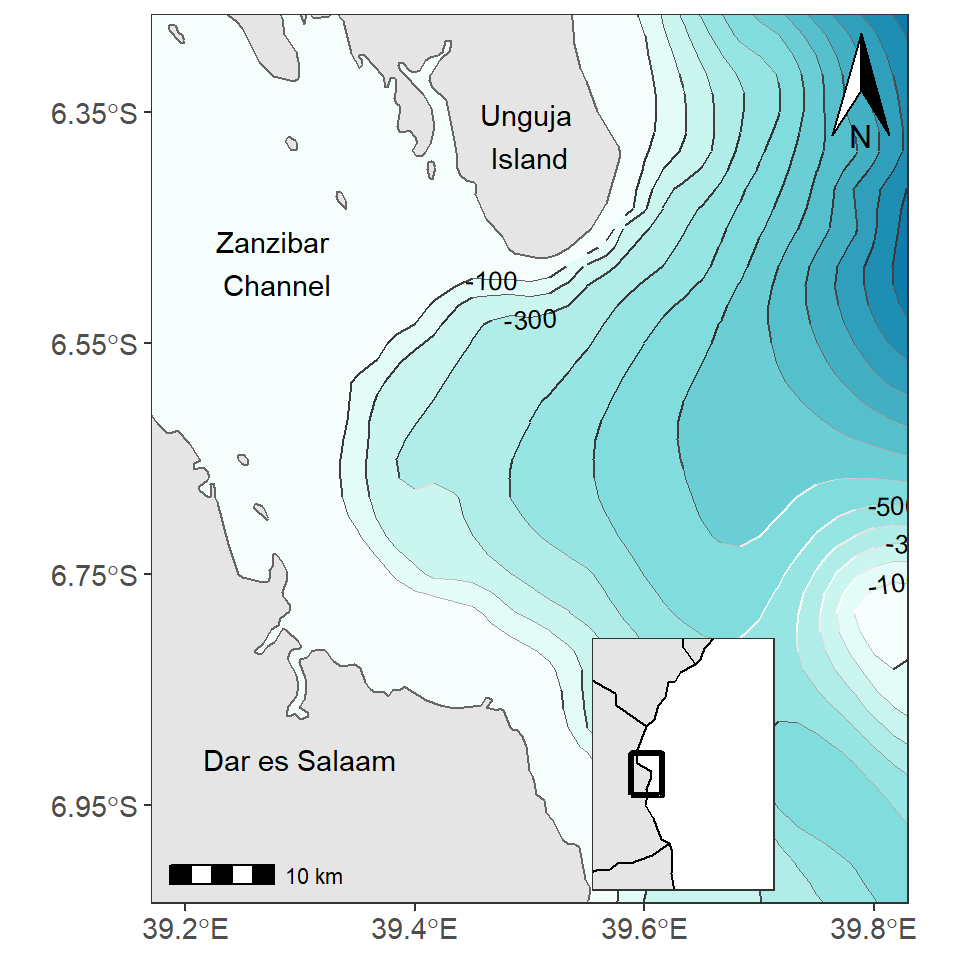
8.6.1 Choropleth maps
Chloropleth maps use color or shading on predefined areas to map values of a numeric or categorical variable in that area. For example we are interested to map the different coral reefs in Jibondo Island, Mafia, Tanzania. First we import the data into R using the st_read() function from sf package (Pebesma 2018)
jibondo.reefs = sf::st_read(dsn = "assets/shp//jibondo_reefs.shp",quiet = TRUE)The jibondo.reefs file is simple feature (equivalent to shapefile) with sixteeen polygons in four groups—coastal-shallow areas, islands, reef flat and submerged reefs. We use the variable type to map the different coastal features in Jibondo. The code used to make (Figure 8.3) is written as:
require(RColorBrewer)
ggplot()+
geom_sf(data = jibondo.reefs, aes(fill = type)) +
coord_sf(xlim = c(39.57, 39.88), ylim = c(-8.15,-7.88)) +
geom_sf_text(data = jibondo.reefs, aes(label = mwamba), check_overlap = TRUE) +
theme_bw() %+%
theme(axis.text = element_text(size = 11), legend.position = c(.8,.18)) +
scale_fill_brewer(palette = "Accent") +
metR::scale_x_longitude(ticks = 0.1) +
metR::scale_y_latitude(ticks = 0.08) +
guides(fill = guide_legend(title = "Reef Type",
title.position = "top",
keywidth = 1.1,
ncol = 1))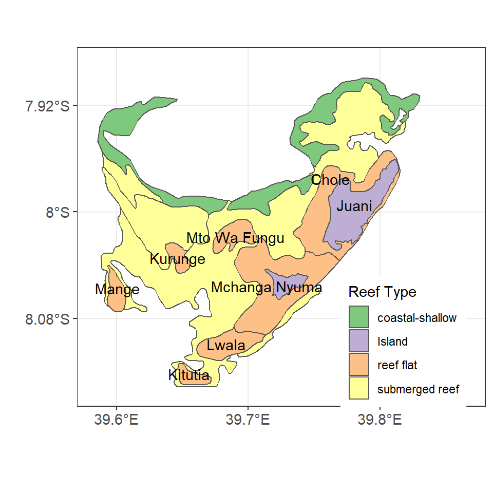
The variable used to make (Figure 8.4) is a categorical, but we can also map continuous variables. For this case, we want to map the catch per unit effort (CPUE) of octopus at each reef to identify octopus catches at different reefs as seen in figure
ggplot()+
geom_sf(data = jibondo.reefs,
aes(fill = cpue %>%round(2) %>% as.factor()))+
coord_sf(xlim = c(39.57, 39.88), ylim = c(-8.15,-7.88))+
geom_sf_text(data = jibondo.reefs, aes(label = mwamba), check_overlap = TRUE) +
theme_bw() %+%
theme(axis.text = element_text(size = 11), legend.position = c(.9,.25)) +
# scale_fill_brewer(palette = "Accent") +
ggsci::scale_fill_d3()+
metR::scale_x_longitude(ticks = 0.1) +
metR::scale_y_latitude(ticks = 0.08)+
guides(fill = guide_legend(title.position = "top",
keywidth = 1.1,
ncol = 1,
title = "CPUE"))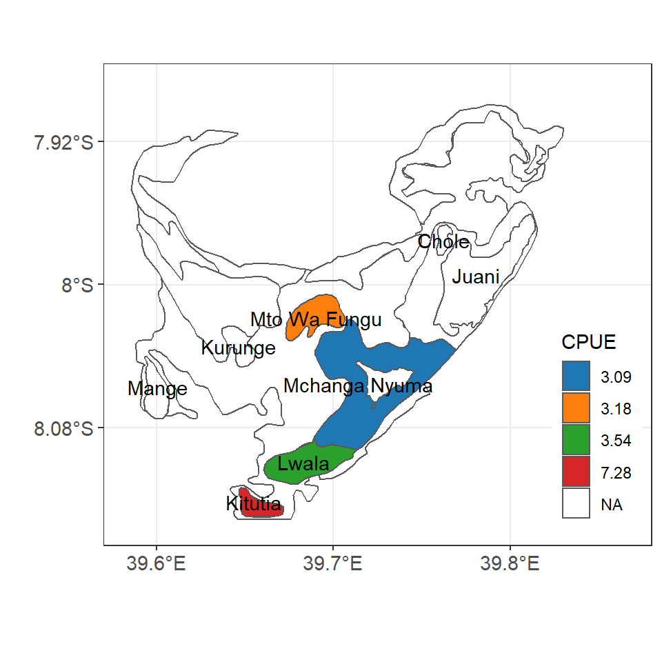
Finally let’s map the the spatial patterns of sea surface temperature anomaly. We plot the departure of sea surface temperature from zonal average mean. Let’s import the dataset from the workspace. For more information on how to compute the zonal departure see chapter…
temperature.anomaly = read_csv("assets//shp/sst_anomaly.csv")| Latitude | Longitude | Depth | Anomaly |
|---|---|---|---|
| -50.5 | 151.5 | 0 | 2.46 |
| 5.5 | 167.5 | 0 | 0.95 |
| 15.5 | 155.5 | 0 | 1.11 |
| -35.5 | -174.5 | 0 | -0.10 |
| -5.5 | 88.5 | 0 | 1.28 |
| 30.5 | -23.5 | 0 | -0.60 |
| -75.5 | -30.5 | 0 | -0.13 |
| -0.5 | -113.5 | 0 | -3.11 |
| 25.5 | -151.5 | 0 | -0.71 |
| 70.5 | -167.5 | 0 | -1.21 |
ggplot() +
metR::geom_contour_fill(data = temperature.anomaly,
aes(x = lon, y = lat, z = anomaly), na.fill = T) +
geom_sf(data = spData::world, col = NA, fill = "grey40")+
coord_sf(xlim = c(-180,178), ylim = c(-90,85), clip = "on", expand = FALSE)+
scale_fill_gradientn(colours = oce::oce.colors9A(120), breaks = seq(-6,6,2))+
theme_bw() +
theme(legend.position = "right", panel.background = element_blank(),
axis.text = element_text(size = 11, colour = "black"),
legend.text = element_text(size = 10),
legend.title = element_text(size = 11))+
guides(fill = guide_colorbar(title = expression(Temperature~anomaly~(degree*C)),
title.position = "right",
title.hjust = 0.5,
title.theme = element_text(angle = 90),
label.theme = element_text(size = 10),
direction = "vertical",
reverse = FALSE, raster = FALSE,
barwidth = unit(.4, "cm"),
barheight = unit(6.5, "cm")))+
metR::scale_y_latitude(ticks = 30) +
metR::scale_x_longitude(ticks = 45)+
labs(x = NULL, y = NULL)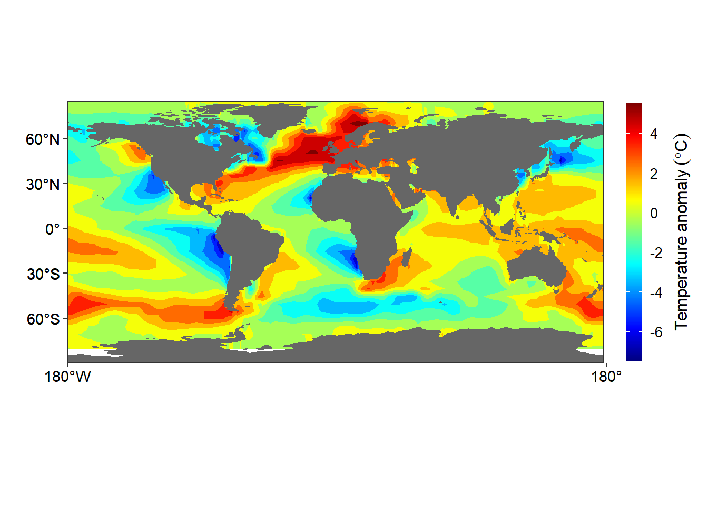
Auguie, Baptiste. 2018. Egg: Extensions for ’Ggplot2’: Custom Geom, Plot Alignment, Symmetrised Scale, and Fixed Panel Size. https://CRAN.R-project.org/package=egg.
Campitelli, Elio. 2019. metR: Tools for Easier Analysis of Meteorological Fields. https://CRAN.R-project.org/package=metR.
Pebesma, Edzer. 2018. Sf: Simple Features for r. https://CRAN.R-project.org/package=sf.
Pedersen, Thomas Lin, and David Robinson. 2017. Gganimate: A Grammar of Animated Graphics. http://github.com/thomasp85/gganimate.
Wickham, Hadley. 2016. Ggplot2: Elegant Graphics for Data Analysis. Springer-Verlag New York. http://ggplot2.org.
Wilke, Claus O. 2018. Cowplot: Streamlined Plot Theme and Plot Annotations for ’Ggplot2’. https://CRAN.R-project.org/package=cowplot.